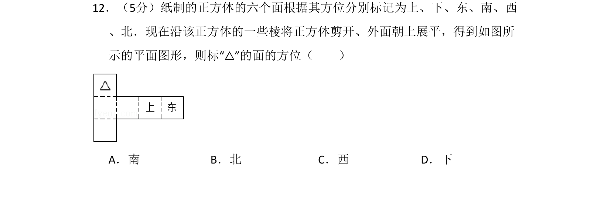
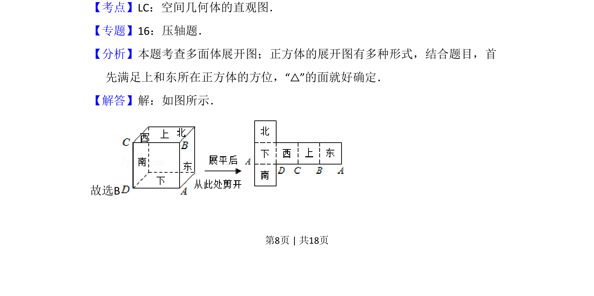
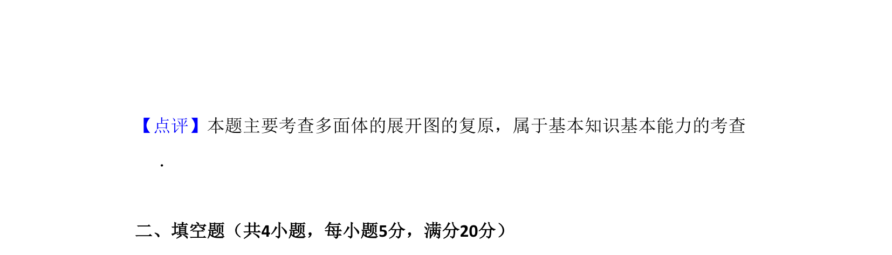

考点：空间几何体的直观图 正方体展开图 空间想象

将正方体展开图还原，根据已知方位判断标记“△”的面的方向。


📄 原 PDF 第 8 页：
素材/真题/吉林/2008-2024·（吉林）数学高考真题/2009年高考数学试卷（文）（全国卷Ⅱ）（解析卷）.pdf
12．（5分）纸制的正方体的六个面根据其方位分别标记为上、下、东、南、西 、北．现在沿该正方体的一些棱将正方体剪开、外面朝上展平，得到如图所 示的平面图形，则标“△”的面的方位（ ） A．南B．北C．西D．下
【考点】LC：空间几何体的直观图．菁优网版权所有 【专题】16：压轴题． 【分析】本题考查多面体展开图；正方体的展开图有多种形式，结合题目，首 先满足上和东所在正方体的方位，“△”的面就好确定． 【解答】解：如图所示． 故选B